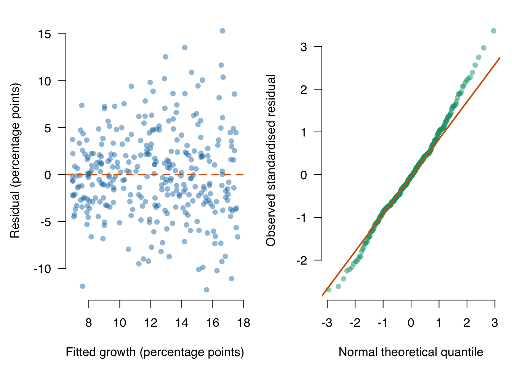

Mock Exam: QM Intermediate
This mock exam represents the full six-lecture course. It contains 100 points, so the exam grade is
\[ \text{grade} = \frac{\text{points earned}}{10}. \]
The Intermediate exam is completed in TestVision with R available. Unless a question states otherwise, use a 5% significance level. Interpret every coefficient in the units and sample defined below; do not use causal language unless the design supports it.
| Question | Topic | Points |
|---|---|---|
| 1 | Simple regression and least squares | 20 |
| 2 | Assumptions and diagnostics | 20 |
| 3 | Model fit and the overall F-test | 20 |
| 4 | Multiple regression and a dummy predictor | 20 |
| 5 | Interactions, curvature, and a partial F-test | 20 |
| Total | 100 |
Dataset used throughout
The downloadable simulated exam dataset represents a simple random sample of 320 independent young ventures from a business registry. One row represents one venture. Treat the stated sampling story as the study context. The design is observational: none of the predictors was randomly assigned.
growth_pct: change in annual sales, in percentage points;marketing_10k: annual marketing spending, in €10,000s;experience_years: lead founder’s prior industry experience, in years;team_size: number of current team members;digital:Nofor a primarily physical offering andYesfor a primarily digital offering.Nois the reference category;spend_c = marketing_10k - 4: marketing spending centred at €40,000.
The target population is the ventures covered by this registry and sampling frame. Later survival and market conditions are not measured.
Download qm-intermediate-mock-exam.csv,
save it in your R project, and load it with:
ventures <- read.csv("qm-intermediate-mock-exam.csv")
ventures$digital <- factor(ventures$digital, levels = c("No", "Yes"))The printed results below allow you to continue if R is temporarily unavailable, but during timed practice you should reproduce them from the downloaded file.
Question 1: Simple regression and least squares — 20 points
The first model is
and R reports
Coefficients:
Estimate Std. Error t value Pr(>|t|)
(Intercept) 6.60 0.52 12.72 <2e-16
marketing_10k 1.38 0.11 12.35 <2e-16
Residual standard error: 4.57 on 318 degrees of freedom
Multiple R-squared: 0.324- Write the fitted regression equation with units. (3 points)
- Interpret the slope and intercept in context. Comment on whether the intercept is substantively useful. (6 points)
- Calculate the fitted growth for a venture spending €30,000 on marketing. If its observed growth is 15 percentage points, calculate its residual and interpret the sign. (5 points)
- Explain what least squares minimises and why residuals are squared rather than simply summed. (4 points)
- State the observational unit and why the fitted slope is not automatically causal. (2 points)
Model answer and marking guide
- \(\widehat{growth\_pct}=6.60+1.38\,marketing\_10k\), where the outcome is in percentage points and the predictor in €10,000s (3 points).
- For each additional €10,000 of marketing spending, fitted annual sales growth is 1.38 percentage points higher among sampled ventures (3 points). At zero marketing spending, fitted growth is 6.60 percentage points (2 points). This intercept is useful only if zero lies in or near the observed spending range and defines a meaningful venture (1 point).
- €30,000 gives
marketing_10k = 3, so the fitted value is \(6.60+1.38(3)=10.74\) percentage points (3 points). The residual is \(15-10.74=4.26\) percentage points; positive means observed growth exceeds the model’s fitted value (2 points). - OLS chooses coefficients that minimise \(\sum_i(y_i-\hat y_i)^2\) (2 points). Unsquared residuals can cancel because positive and negative residuals sum to zero with an intercept; squaring also penalises larger misses more strongly (2 points).
- The unit is one venture (1 point). Observational association can reflect confounding, reverse direction, selection, or measurement error (1 point).
Question 2: Assumptions and diagnostics — 20 points
R produced the following diagnostics for
lm(growth_pct ~ marketing_10k, data = ventures). In the left panel,
each point has fitted growth on the horizontal axis and its residual on the
vertical axis. In the right panel, observed standardised residuals are plotted
against theoretical standard-normal quantiles; a normal pattern would follow
the straight reference line.

- Read both axes of the residual-versus-fitted panel and explain what a point above zero represents. (4 points)
- What pattern do you see in that panel? Name the assumption it challenges. (4 points)
- Explain how to read the Q–Q plot and assess normality here. (4 points)
- Name two regression assumptions that these plots cannot establish, and state what information would help assess each. (4 points)
- Would heteroskedasticity-robust standard errors repair a curved conditional mean or make the slope causal? Explain. (4 points)
Model answer and marking guide
- The horizontal axis is model-fitted growth; the vertical axis is observed-minus-fitted growth, both in percentage points (2 points). A point above zero is a venture whose observed growth is higher than its fitted growth (2 points).
- Vertical spread increases with fitted growth, creating a fan shape (2 points). This challenges constant conditional variance (homoskedasticity) (2 points).
- The Q–Q plot compares ordered residuals with values expected under a normal distribution; agreement appears as points near the line (2 points). The middle is reasonably aligned but tail departures suggest imperfect normality and possible extreme residuals (2 points).
- Examples: independence requires knowledge of clustering, repeated observations, or sampling order; zero conditional mean/no omitted confounding requires substantive design knowledge and relevant variables; correct measurement requires information about how variables were recorded (2 points per valid assumption plus evidence source, maximum 4).
- Robust SEs can improve large-sample uncertainty estimates under heteroskedasticity (2 points). They do not change the fitted conditional mean, repair omitted curvature, remove confounding, or make an observational coefficient causal (2 points).
Question 3: Model fit and the overall F-test — 20 points
The researcher next fits
multiple_model <- lm(
growth_pct ~ marketing_10k + experience_years + team_size + digital,
data = ventures
)R reports:
Residual standard error: 4.09 on 315 degrees of freedom
Multiple R-squared: 0.464, Adjusted R-squared: 0.457
F-statistic: 68.10 on 4 and 315 DF, p-value: < 2.2e-16For the intercept-only model, SST = 9,831.91. For multiple_model,
SSE = 5,272.57.
- Verify \(R^2\) from SST and SSE. Interpret it precisely. (6 points)
- Explain why adjusted \(R^2\) is lower than \(R^2\), and when adjusted \(R^2\) is useful. (4 points)
- State the null and alternative hypotheses of the reported overall F-test. Give its conclusion. (6 points)
- Explain why this F-test is not equivalent to four separate 5% t-tests. (2 points)
- Does \(R^2=0.464\) show that the model predicts future ventures well? Explain briefly. (2 points)
Model answer and marking guide
- \(R^2=1-5272.57/9831.91\approx0.464\) (3 points). The fitted values explain 46.4% of the observed sample variation in sales-growth percentage points; it is not a percentage of correct predictions (3 points).
- Adjusted \(R^2\) penalises the addition of predictors relative to sample size and can fall when a term adds little fit (2 points). It helps compare models fitted to the same outcome and analysis rows, although it is not a substitute for validation or substantive reasoning (2 points).
- \(H_0:\beta_{marketing}=\beta_{experience}=\beta_{team}=\beta_{digital}=0\) against the alternative that at least one is non-zero (3 points). The tiny p-value leads to rejection: the complete model improves on an intercept-only model under the inferential conditions (3 points).
- The F-test is one joint test of a vector of coefficients and accounts for their covariance; separate t-tests answer four individual questions and create a multiple-testing problem (2 points).
- No. This is in-sample fit; future prediction requires an appropriate test set or cross-validation and a stable target population (2 points).
Question 4: Multiple regression and a dummy predictor — 20 points
The coefficient table below comes from
lm(growth_pct ~ marketing_10k + experience_years + team_size + digital, data = ventures).
The reference category for digital is No.
Estimate Std. Error t value Pr(>|t|)
(Intercept) 2.45 0.77 3.18 0.002
marketing_10k 1.34 0.10 13.40 <0.001
experience_years 0.26 0.04 6.23 <0.001
team_size 0.17 0.10 1.63 0.104
digitalYes 3.08 0.46 6.67 <0.001- Interpret
marketing_10k, including the predictor step, outcome unit, held-fixed variables, and sample. (5 points) - Interpret
digitalYesand name its reference category. (4 points) - Compare two otherwise identical ventures: A spends €20,000 on marketing,
has 5 years of founder experience, a team of 4, and
digital = No; B has the same values except it spends €40,000 and hasdigital = Yes. Calculate B’s fitted growth minus A’s. (5 points) - Test \(H_0:\beta_{team\_size}=0\) against a two-sided alternative and give a careful conclusion. (3 points)
- Explain why including controls does not by itself give the marketing or digital coefficients a causal interpretation. (3 points)
Model answer and marking guide
- Among sampled registry ventures, an additional €10,000 in annual marketing spending is associated with 1.34 percentage points higher fitted sales growth, holding founder experience, team size, and offering type fixed (5 points).
- At equal marketing spending, experience, and team size, primarily digital
ventures have fitted growth 3.08 percentage points higher than primarily
physical ventures;
Nois the reference (4 points). - The spending change is two units, contributing \(2(1.34)=2.68\); changing
from
NotoYescontributes 3.08. The fitted difference is \(2.68+3.08=5.76\) percentage points (5 points). - \(t=1.63\), \(p=0.104>0.05\), so do not reject \(H_0\). The model does not provide sufficiently precise evidence of a non-zero partial team-size association; it does not prove the coefficient equals zero (3 points).
- Controls only adjust for measured variables in the specified functional form. Unmeasured confounding, reverse direction, selection, and measurement error can remain in this observational study (3 points).
Question 5: Interactions, curvature, and a partial F-test — 20 points
The researcher fits the hierarchical model
extended_model <- lm(
growth_pct ~ spend_c * digital + I(spend_c^2) + experience_years,
data = ventures
)with estimates:
Estimate
(Intercept) 9.20
spend_c 1.04
digitalYes 2.96
I(spend_c^2) -0.11
experience_years 0.24
spend_c:digitalYes 0.68The partial comparison with the additive linear model reports:
Analysis of Variance Table
Model 1: growth_pct ~ spend_c + digital + experience_years
Model 2: growth_pct ~ spend_c * digital + I(spend_c^2) + experience_years
Res.Df RSS Df Sum of Sq F Pr(>F)
1 316 5317.0
2 314 5053.8 2 263.23 8.18 0.00035- At €40,000 of marketing spending (
spend_c = 0), give the fitted spending slope for each offering type and the fittedYes–Nodifference. (6 points) - At €60,000 (
spend_c = 2), calculate the fittedYes–Nodifference. (3 points) - For a physical-offering venture, calculate the fitted change when spending
rises from €60,000 (
spend_c = 2) to €70,000 (spend_c = 3), holding experience fixed. Repeat for a digital venture. (5 points) - State the hypotheses and conclusion of the partial F-test. (4 points)
- State the hierarchy rule and one reason not to extrapolate this quadratic far beyond the observed spending range. (2 points)
Model answer and marking guide
- At
spend_c = 0, the physical-offering slope is 1.04 percentage points per €10,000 and the digital slope is \(1.04+0.68=1.72\) (2 points each). The fitted digital-minus-physical difference is 2.96 percentage points (2 points). - The group difference is \(2.96+0.68(2)=4.32\) percentage points (3 points).
- For physical offerings, the change from 2 to 3 is \(1.04(1)-0.11(3^2-2^2)=1.04-0.55=0.49\) percentage points (2 points). For digital offerings, add the interaction change of 0.68, so the fitted change is 1.17 percentage points (2 points). Units and the held-fixed experience condition earn 1 point.
- \(H_0:\beta_{spend\times digital}=\beta_{spend^2}=0\) against at least one being non-zero (2 points). Since \(p=0.00035<0.05\), reject: the two added terms are jointly useful beyond the additive linear model, under the model conditions (2 points).
- Retain the component lower-order terms when including an interaction or polynomial term (1 point). A polynomial can turn sharply and imply unrealistic values outside the observed range (1 point).
Your marks across the five questions should sum to 100. Complete the mock exam in R before expanding the answers. Use the marking guide to check not only calculations but also units, reference groups, held-fixed statements, uncertainty, and causal limits.